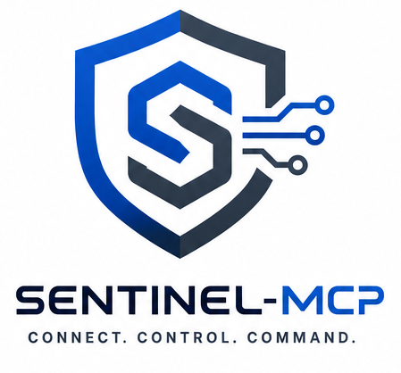

0
Built-in Lite abilities
WordPress + AI Infrastructure
Sentinel-MCP exposes your real WordPress schema as AI-ready abilities: post types, taxonomies, fields, media, SEO, multilingual data, diagnostics, and more. No hand-made YAML. No brittle endpoint wrappers.

Built-in Lite abilities
SEO plugins supported
Major i18n plugins supported
Days of activity retention
Why This Repo Matters
Detects CPTs, taxonomies, statuses, shortcodes, block patterns, ACF and meta at runtime so clients see the true shape of your site.
Create, read, update, search, and delete content with taxonomy/meta filters, featured image workflows, and Gutenberg-aware payloads.
OAuth 2.1 with PKCE, Dynamic Client Registration, per-client ability allowlists, and per-client rate limits provide controlled agent access.
Activity logs with retention, call status and timing, plus a public health endpoint for uptime systems.
Unified SEO reads across 8 plugins, multilingual reads across Polylang/WPML/ TranslatePress, and conditional WooCommerce coverage.
Includes Gemini image generation abilities and a WP 7.0+ admin AI Mode for in-dashboard conversational workflows.
Flow
Claude, ChatGPT, Copilot, Cursor, Continue, and others register and authenticate with OAuth 2.1.
Each client receives only the abilities granted in its allowlist and operates under rate limits.
Content, media, taxonomy, diagnostics, SEO, multilingual, and WooCommerce reads run against live WordPress state.
Activity logs capture who called what, status, timing, and IP for operations visibility.
Compatibility
Repository Highlights
Requirements
Get Started